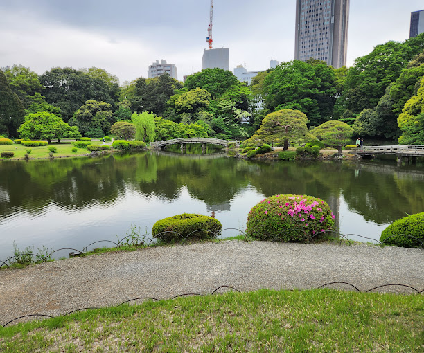
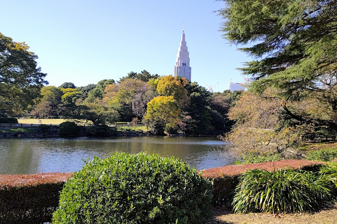
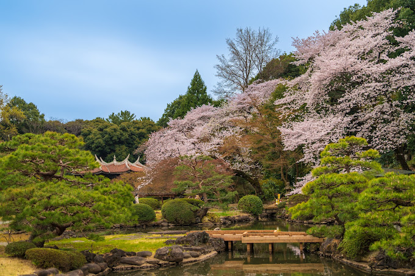
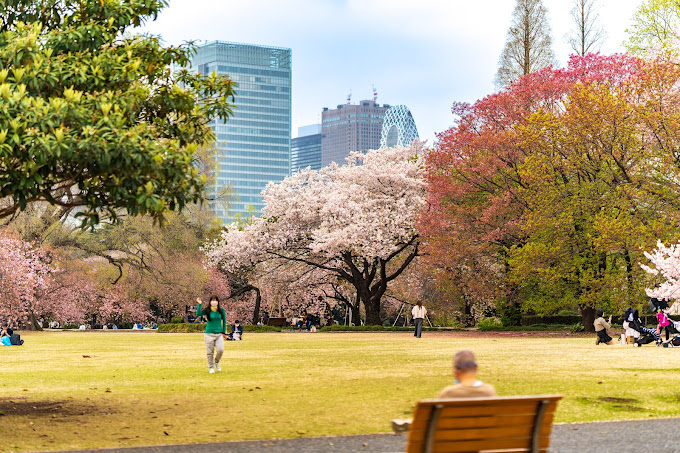
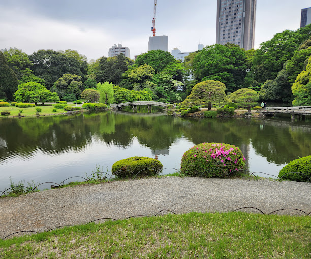
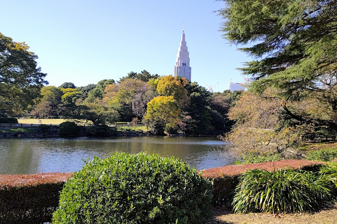
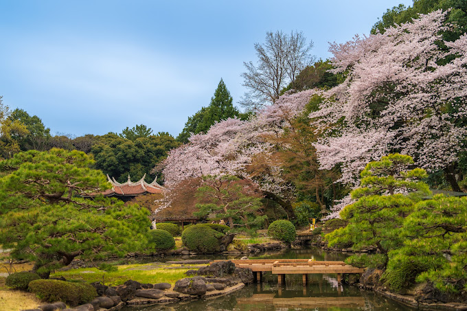
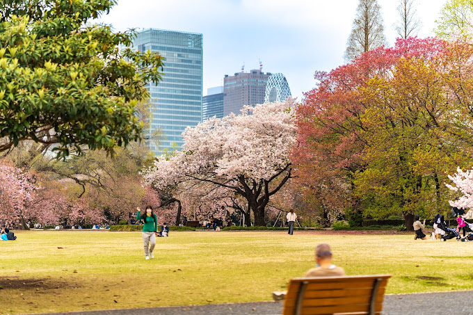

TOURIST SPOT
SHINJUKU GYEON NATIONAL GARDEN
• Shinjuku Gyo-en is a large park and garden in Shinjuku and Shibuya, Tokyo, Japan.
• It was originally a residence of the Naitō family in the Edo period. Afterward, it became a garden under the management of Japan Imperial Household Agency.
 






